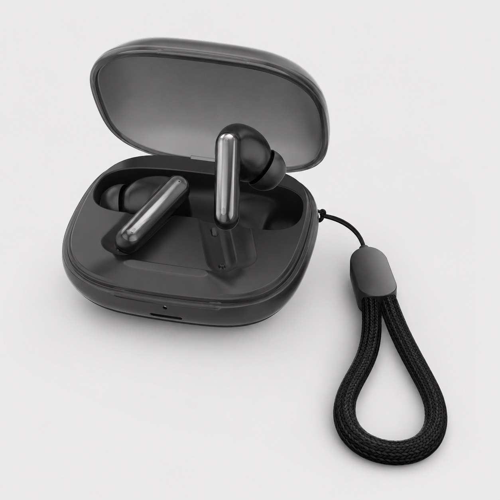
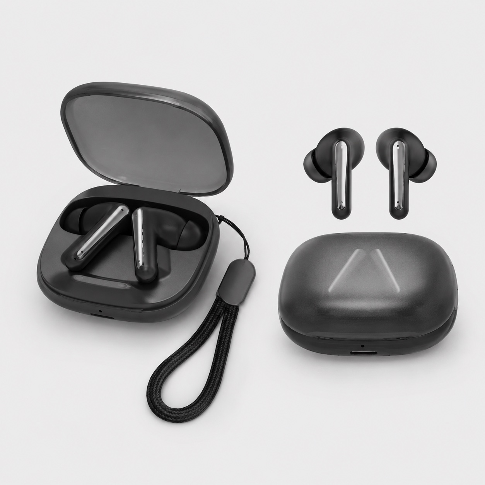
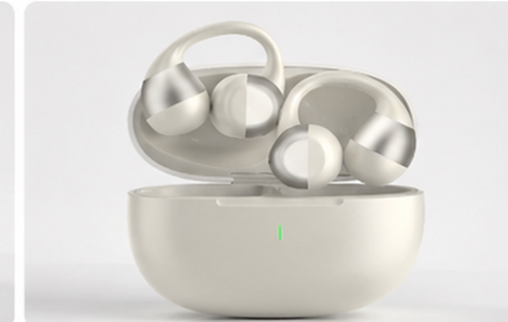

TWS044F in-ear TWS earbuds
This page reviews a compact in-ear TWS direction with supplied charging-case, wearing-fit, lifestyle and packing-list visuals.
TWS buyer decision guide
When a buyer says they need TWS earbuds, the first decision is not the logo or box artwork. It is the wearing style. A compact in-ear model and an open-ear or earclip model can serve very different sales channels, photo stories and sample checks.

Short answer
Private-label TWS buyers should first decide whether the product line needs a familiar compact in-ear earbud, or an open-ear and earclip direction built around comfort, awareness and lifestyle visibility. Logo, color, manual language and packaging are easier to discuss after the base wearing style is clear.
Decision table
This table helps decide which sample discussion should happen first. The goal is not to declare one style better, but to match the model to the buyer's channel and usage story.
| Buyer question | In-ear TWS direction | Open-ear TWS direction |
|---|---|---|
| Wearing style | Compact, familiar earbud shape for buyers who want a standard TWS look. | Visible earclip or open-ear form for comfort-led and awareness-led use. |
| Sample fit check | Review in-ear comfort, visible profile and stability during normal movement. | Review earclip tension, pressure points, stability and comfort after real use. |
| Sound leakage | Usually evaluated around fit, seal direction and listening scenario. | Must be checked carefully because open-ear structures behave differently from sealed earbuds. |
| Call-use review | Confirm microphone and call scenario on the actual selected sample. | Confirm voice clarity in office, street and commute-style environments before claims. |
| Content planning | Case, earbud and wearing images support product-page and marketplace planning. | Lifestyle and wearing images are especially important because the form is more visible. |
| Packaging discussion | Confirm case, cable, manual language, retail box and optional items after sample selection. | Confirm the same items, plus whether the product needs extra wearing or usage explanation. |
Reference models
These model pages give buyers concrete images and sample-review context before asking for a quotation or private-label discussion.

This page reviews a compact in-ear TWS direction with supplied charging-case, wearing-fit, lifestyle and packing-list visuals.

This page reviews an open-ear earclip direction with listed specifications, color options, packing-list and comfort-focused sample questions.
Sample checklist
Ask the sample user to wear the earbuds during realistic movement, office use or commute-style activity, then record comfort and stability notes.
For open-ear samples, test listening level in a quiet room and ask whether nearby people hear too much audio for the target use case.
Review calls in a quiet office, near keyboard noise and in light outdoor background noise before approving any call-quality wording.
Check case finish, hinge, magnetic hold, charging contacts, indicator behavior and how the case appears in product photos.
Confirm earbuds, charging case, cable, manual language, retail box, inner tray and optional items before packaging artwork.
Send target market, sales channel, selected model, quantity range, sample timing, logo needs, color direction and document questions.
Buyer scenarios
Start with the style that gives the clearest product photos and a simple buyer explanation. In-ear TWS may be easier when the listing needs a familiar shape.
Open-ear or earclip TWS can be useful when the brand wants a comfort-led daily-use product beside standard earbuds or headphones.
Prepare one in-ear and one open-ear sample when regional buyers need to compare two different TWS stories before giving feedback.
Do not start with artwork. First confirm the base model, sample version, accessory set and manual language, then discuss logo and retail box direction.
FAQ
Buyers should start with the wearing style that matches the target sales channel. In-ear TWS is usually easier to position as a compact familiar earbud, while open-ear or earclip TWS should be reviewed when comfort, awareness and visible lifestyle use are central to the buyer brief.
TWS044F works as an in-ear TWS reference and Earclip09S works as an open-ear or earclip reference. Compare wearing fit, leakage expectations, call-use scenario, charging case, packing list, color direction, branding needs and RFQ details before choosing samples.
Avoid publishing exact battery, call, waterproof, latency, document or performance claims before those details are confirmed for the selected sample version and destination market.
Include destination market, sales channel, preferred wearing style, model interest, quantity range, sample timing, logo or color direction, packaging needs, manual language and document questions.
Next step path
After choosing in-ear or open-ear direction, keep the next action tied to a stable TALRIVO page and the selected model evidence.
Related pages
Share your target market, sales channel, preferred wearing style, sample timing, branding direction and packaging questions. TALRIVO can help organize a clearer TWS sample comparison before quotation.